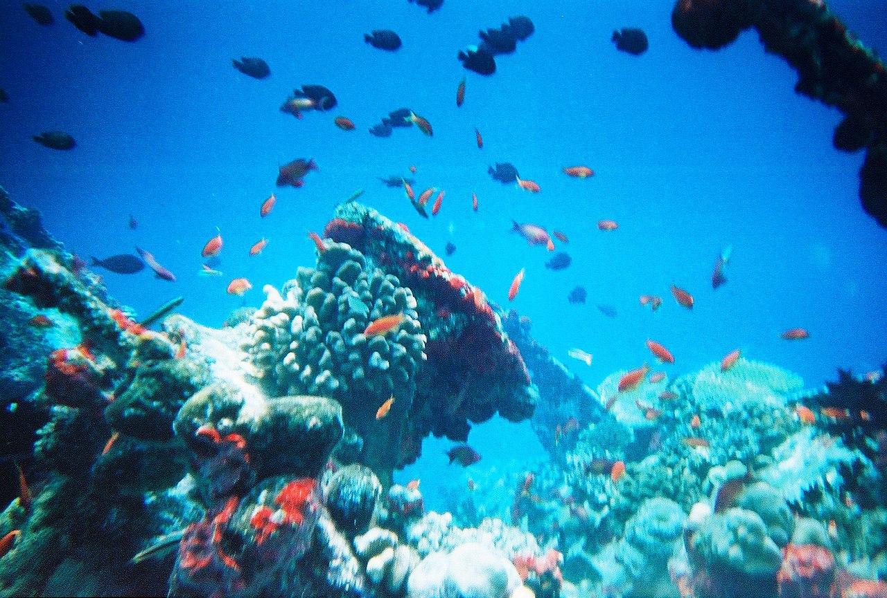

An aquatic ecosystem is an ecosystem found in and around a body of water, in contrast to land-based terrestrial ecosystems. Aquatic ecosystems contain communities of organisms—aquatic life—that are dependent on each other and on their environment. The two main types of aquatic ecosystems are marine ecosystems and freshwater ecosystems.Freshwater ecosystems may be lentic (slow moving water, including pools, ponds, and lakes) lotic (faster moving water, for example streams and rivers) and wetlands (areas where the soil is saturated or inundated for at least part of the time).
Marine ecosystems are the largest of Earth's aquatic ecosystems and exist in waters that have a high salt content. These systems contrast with freshwater ecosystems, which have a lower salt content. Marine waters cover more than 70% of the surface of the Earth and account for more than 97% of Earth's water supply and 90% of habitable space on Earth. Seawater has an average salinity of 35 parts per thousand of water. Actual salinity varies among different marine ecosystems. Marine ecosystems can be divided into many zones depending upon water depth and shoreline features. The oceanic zone is the vast open part of the ocean where animals such as whales, sharks, and tuna live. The benthic zone consists of substrates below water where many invertebrates live. The intertidal zone is the area between high and low tides. Other near-shore (neritic) zones can include mudflats, seagrass meadows, mangroves, rocky intertidal systems, salt marshes, coral reefs, lagoons. In the deep water, hydrothermal vents may occur where chemosynthetic sulfur bacteria form the base of the food web.
A marine coastal ecosystem is a marine ecosystem which occurs where the land meets the ocean. Marine coastal ecosystems include many very different types of marine habitats, each with their own characteristics and species composition. They are characterized by high levels of biodiversity and productivity.
Organisms that live freely at the ocean surface, termed neuston, include keystone organisms like the golden seaweed Sargassum that makes up the Sargasso Sea, floating barnacles, marine snails, nudibranchs, and cnidarians. Many ecologically and economically important fish species live as or rely upon neuston. Species at the surface are not distributed uniformly; the ocean's surface harbours unique neustonic communities and ecoregions found at only certain latitudes and only in specific ocean basins. But the surface is also on the front line of climate change and pollution. Life on the ocean's surface connects worlds. From shallow waters to the deep sea, the open ocean to rivers and lakes, numerous terrestrial and marine species depend on the surface ecosystem and the organisms found there.
Freshwater ecosystems are a subset of Earth's aquatic ecosystems. They include lakes, ponds, rivers, streams, springs, bogs, and wetlands.They can be contrasted with marine ecosystems, which have a larger salt content. Freshwater habitats can be classified by different factors, including temperature, light penetration, nutrients, and vegetation. There are three basic types of freshwater ecosystems: Lentic (slow moving water, including pools, ponds, and lakes), lotic (faster moving water, for example streams and rivers) and wetlands (areas where the soil is saturated or inundated for at least part of the time). Freshwater ecosystems contain 41% of the world's known fish species.
A lake ecosystem or lacustrine ecosystem includes biotic (living) plants, animals and micro-organisms, as well as abiotic (non-living) physical and chemical interactions.[11] Lake ecosystems are a prime example of lentic ecosystems (lentic refers to stationary or relatively still freshwater, from the Latin lentus, which means "sluggish"), which include ponds, lakes and wetlands, and much of this article applies to lentic ecosystems in general. Lentic ecosystems can be compared with lotic ecosystems, which involve flowing terrestrial waters such as rivers and streams. Together, these two ecosystems are examples of freshwater ecosystems.
River ecosystems are flowing waters that drain the landscape, and include the biotic (living) interactions amongst plants, animals and micro-organisms, as well as abiotic (nonliving) physical and chemical interactions of its many parts.River ecosystems are part of larger watershed networks or catchments, where smaller headwater streams drain into mid-size streams, which progressively drain into larger river networks. The major zones in river ecosystems are determined by the river bed's gradient or by the velocity of the current. Faster moving turbulent water typically contains greater concentrations of dissolved oxygen, which supports greater biodiversity than the slow-moving water of pools. These distinctions form the basis for the division of rivers into upland and lowland rivers.
Wetlands, or simply a wetland, is a distinct ecosystem that is flooded or saturated by water, either permanently (for years or decades) or seasonally (for weeks or months). Flooding results in oxygen-free (anoxic) processes prevailing, especially in the soils. The primary factor that distinguishes wetlands from terrestrial land forms or water bodies is the characteristic vegetation of aquatic plants, adapted to the unique anoxic hydric soils. Wetlands are considered among the most biologically diverse of all ecosystems, serving as home to a wide range of plant and animal species. Methods for assessing wetland functions, wetland ecological health, and general wetland condition have been developed for many regions of the world. These methods have contributed to wetland conservation partly by raising public awareness of the functions some wetlands provide.[18] Constructed wetlands are designed and built to treat municipal and industrial wastewater as well as to divert stormwater runoff. Constructed wetlands may also play a role in water-sensitive urban design.